連珠基本戰術
by Ando
我們假定讀者已經對連珠有了必要的瞭解。
為了取勝，僅僅等待時機希望對手犯初級錯誤是不夠的。我們還需學習連珠的戰術來提高自己的水平。
●有機會進攻時，不要消極防守
●法則：進攻型選手更容易取得勝利
當你的對手行棋被動或並非真正主動時，你不必和他走同樣類型的棋。如下圖，白棋第10步走出眠3，看起來為進一步進攻做好了準備；但如果你仔細計算，你會發現白棋的進攻沒有連續性。因此，我們認為白棋並非主動，黑棋可以馬上在11處開始構築攻擊。但很多棋手卻擋在11-C，雖然不是壞著，但在當前情況下，完全沒有必要。另外，我要加一句，白棋應該走10-A或10-B，而不是10-10，而後黑棋就不能走11了。
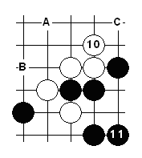
●構築進攻開始於產生活2。盡可能讓棋子發揮最大的效用。
在當前情況下，黑棋有不同的走法。下方左圖中，走在A點雖然產生了兩個2，但是都是死2，在進攻中幾乎毫無威力。而走在B點會產生兩個活2，為進一步進攻打下了基礎。總之，一個原則：走出越多的活線越好。右圖中，黑棋有四個好的選擇（A，B，C，D）來構築進攻，但最好的是D，因為它同時產生了3個活2。
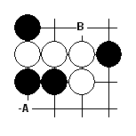
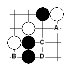
●當必須防守時，選擇最有利於將來進攻的防守點
下二圖中有兩種走法來擋住白的活3。既然黑棋的兩種走法都可以，他必須判斷哪一種更有利於將來的進攻。很明顯，走在A點比走在B點更有利。但是，右圖的情況稍有不同，A點雖然對將來的進攻有利，黑棋仍然必須走在B點，否則就會輸棋。因此只有在象左圖那種不會輸棋的情況下才來選擇最好的防守點。
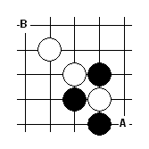
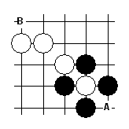
●防守不總是要擋，有時要設法控制對方
下圖雖然輪到黑棋走，但黑棋必須小心，否則白棋會在B點開始取勝的攻擊。因此，黑棋必須選擇對將來進攻最有利的防守方法。考慮到那條法則，A點明顯好於B點。然而，黑棋走A或B後，白棋會走C，則黑棋喪失了以前好的形勢。在此，最好的方法是控制白棋。黑棋應該即刻走C。它產生了多個活2，而且黑棋不必再擔心白棋在B點的進攻，因為白棋僅有的活2是在黑棋的控制下。如果白棋試圖走B，則黑棋在下面擋住3，產生足夠有利的形勢來持續進攻並取得勝利。
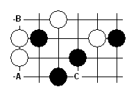
●所有成功的攻擊都是以“交叉” 結束。所謂“交叉”是產生兩條或多條攻擊線，而每條線都能取勝。總之，交叉是取勝的唯一之路。
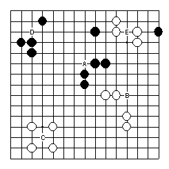
三種最簡單的交叉類型是3x3交叉，4x4交叉和4x3交叉。根據連珠規則，3x3和4x4是禁手，所以黑棋唯一取勝的機會是4x3。白棋沒有禁手。圖中可以看到3x3的示例。3x3由兩個活3組成，每個活3下一步都可以成為活4。A，B，C都是正確的交叉，但D和E是假交叉—只有一個活3可以成為活4，另外一個3是假活3。
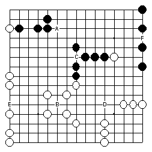
左圖是4x4交叉的示例。由於4x4是黑方的禁手，所以黑方不能走A，F 和 C。
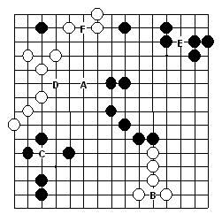
左圖是各種4x3交叉。4x3交叉黑白都可以走。4x3交叉由一個四（下一步可以成為5）和一個活3（下一步成為活4）組成。正確的4x3是A，B，C
和D。E和F是假交叉，因為缺少活3。
而且有更複雜的交叉，超過2條線交於一點。如3x3x3, 4x3x3, 4x4x4等。
當你計算你的攻擊時，你必須能夠預見最後結束於某種交叉。下圖中，一個好的棋手總是能夠在走第7步棋前預見到第19步的勝利。由於黑方只能4x3取勝，所以黑方的計算相對困難些。
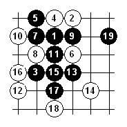
●無論攻擊還是防守，不僅要考慮棋盤上的棋子，還要考慮棋盤上將出現的棋子，你必須考慮雙方將要走出的棋子。
白棋行棋。看起來好像白棋不能在I點取勝，因為黑棋的VCF(A,C,E,G)。但當你計算白棋在黑棋攻擊中走出的棋子(B,D,H,F)，你會看到黑方的VCF會被切斷，因此走I，白方勝。
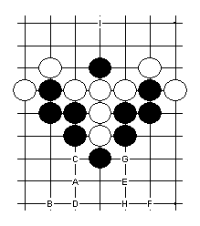
●不要在無謂情況下走出3或者4,除非在保證能贏或不得不防守的情況下
下圖中展示了過早使用3和4導致攻擊的失敗。現在白棋形勢很好，並且很快會勝。正確的步驟應該是11下在16。
在有的情況下，必須走3或4來避免輸棋。你在圖中也可以看到，如果白棋不走18，黑棋就會走在那裏，下一步在28形成4x3勝。
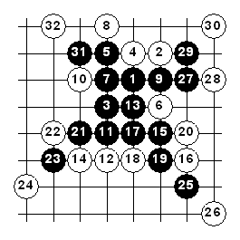
●試圖包圍對方的棋子，挑起對方註定要失敗的攻擊
上圖也是最好的例子，白棋設法讓黑棋在第7步棋開始攻擊，而且黑棋不瞭解最好的攻擊步驟，因此黑棋在32步陷入了絕境。
●正確的緩步在某些情況下是唯一的取勝之路。緩步就是走出不是3，4或其他具有威脅的棋子。
下圖中白棋試圖連接兩塊攻擊地帶。看起來走21後再走A和B就能取勝，但白棋在22有反4，黑棋不得不防，白棋就可以在左邊擋住A，B的威脅。
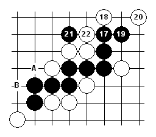
下圖，黑棋試圖改變攻擊的順序，但同樣由於白棋的反4而不能成功。
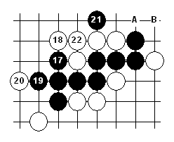
黑棋在這種情況下的確能取勝。除了3和4，緩步可以繼續攻擊。緩步就是不產生任何活線或VCF等對方必須阻擋的棋。但走緩步前必須考慮對方的反擊。第17步是緩步。不論白棋走在哪里，黑棋都可以在A，B或C，D取勝。因為走緩步後，白棋沒有任何反4的機會。
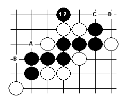
●主動防守有時是避免失敗的唯一之路
主動防守是能夠產生自己3或4或VCF的防守。當被動防守時，對方可以持續攻擊，但主動防守迫使對方停止攻擊轉入防守。主動防守的主要目的是贏得先手。記住，如果取得先手卻沒有後著時不要使用主動防守。有時，主動防守不僅能夠挽回敗局，而且能反敗為勝。
下 圖中輪到白棋行棋，不同的選手會有不同的走法。 不懂得主動防守的選手會象右圖那樣，簡單的在12處擋住3。其後黑棋很容易的走兩個3，最後4x3取勝。
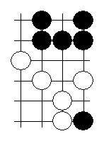
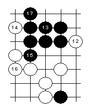
但懂得主動防守的選手會象左圖那樣，通過12和14取得先手。現在白棋不需再防守，可以主動進攻，在16處形成3x3，輕鬆取勝。
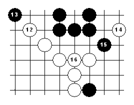
●對於旗鼓相當的選手：黑棋的形勢隨著時間的延長而變得越來越不妙，因為黑有禁手。白棋堅持的時間越長，勝算越大。因此，黑棋應該爭取儘早取勝。一旦黑棋失去主動，很難再爭取回來。
●我們因而得出結論：黑棋在棋局的前半部分佔有優勢，如果黑棋仍未取勝，則白棋在後半部分佔有優勢。
●斜線比垂直線或水平線更有威力，因而盡可能發展斜線。
典型的斜線攻擊手段是在走出斜3或斜4後，走出多個活2。同樣的攻擊手段通常對於垂直和水平線並不奏效。下圖中，白棋在A點可以輕鬆防守住，但左圖則防守不住，黑棋實在是太強了。
但是，也不要過於注重斜線，有些情況下，只有垂直線或水平線才能取勝。
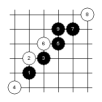
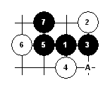
●防守時應考慮棋盤邊緣對於位置的影響，把它作為附加的防衛手段。
下圖源於流星開局。到第31步，黑棋已經到達了攻擊的最後階段。如果白棋簡單地在X點阻擋，黑棋會走A，B而取勝。
但是白棋在此有個好主意可以避免輸棋，由於接近棋盤邊緣，白棋可以在Y點擋住黑棋的3。如果黑棋繼續走A，則白棋可以在C，D走4而取勝。在此，我們可以看到因為接近棋盤邊緣而使主動防守成為可能。
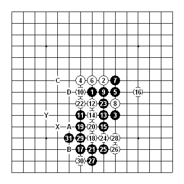
●走白棋時，把黑棋的禁手作為構築攻擊的附加手段。但也不能過分依靠禁手。
第7步後，黑棋形勢過強，白棋防守不住，必須另闢蹊徑，唯一的方法是利用黑棋的禁手。12的沖4是很好的時機，它形成了黑棋的禁手，並且下一步14就可以利用禁手取勝。但對於沒有禁手的五子棋，則黑棋走7後就必勝了。
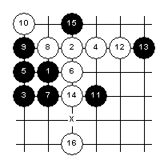
下圖是一個錯誤利用禁手的例子。第8步走錯。現在黑棋走在9就可以輕鬆取勝。但很多剛剛接觸禁手的初學者很興奮地以為能夠捉住黑棋的禁手而犯了這樣的錯誤。正確的走法是8-A。
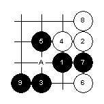
●通常白棋走在黑棋的禁手點是白棋最好的防守方法。
只有在白棋進攻時，禁手點才是黑棋的弱點。白棋進攻時應充分利用黑棋的禁手。當黑棋進攻時，則情形完全不同。禁手點給黑棋的進攻提供了很多選擇。因此，白棋走在黑手的禁手點通常是最好的防守方法。
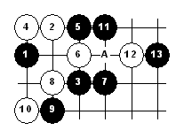
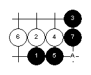
兩副圖中，A點都是白棋的最好防守方法。實際上，可以發現大量的對局中，白棋的最好防守點是在黑棋的禁手點。
●如果不能肯定自己的攻擊技巧時，應考慮防守的後備手段來避免輸棋。
有許多謹慎攻擊類型的棋手。由於害怕攻擊不能奏效及因此導致的輸棋而不敢充分進攻，這種進攻有充分的取勝機會，但一旦失敗，則不可避免要輸棋。謹慎進攻意味著即使攻擊失敗，仍然不至於輸棋。有時，棋盤上一部分被擊退的進攻能夠延續另一部分的進攻。
●最後的建議：
不要依靠對手的簡單失誤或騙著來構築你的進攻。
要綜合使用上述的戰術來系統地構築你的進攻。